\begin{equation*}
\text{linear}\, f_a (x)=f(a)+mf(a+1)*(x-a)\text{.}
\end{equation*}
Section 3.3 Local Linearity
The last two sections examined rate of change in both the discrete and continuous case. The first application for rate of change at a point is to make projections for values of the function close to that point. We want to find the equation of a linear function that can be used to approximate our function. This is straightforward using the point-slope version of a linear equation.
For the discrete case, given a function \(y=f(x)\text{,}\) where we know value of, \(mf(a+1)\text{,}\) the marginal change in \(f(x)\) to get to \(x=a+1\text{,}\) then our discrete linear approximation has the form:
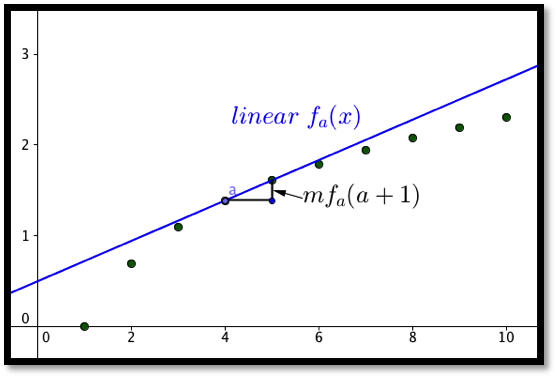
In the differentiable case, given a function \(y=f(x)\text{,}\) where we know value of, \(f'(a)\text{,}\) the derivative of \(f(x)\) at \(x=a\text{,}\) then our linear approximation has the form:
\begin{equation*}
\linear f_a (x)=f(a)+f'(a)*(x-a)\text{.}
\end{equation*}
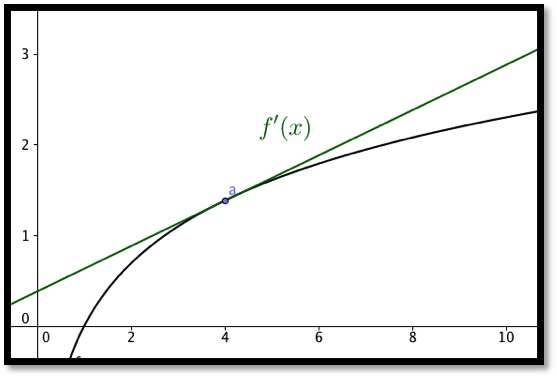
The two formulas are almost the same. The discrete case uses the slope of a secant line obtained by looking at points where the x values differ by 1. In the differentiable case we look at the slope of the tangent line. One of the reasons for looking at the linear approximation of a function is that linear functions are easy to evaluate.
Example 3.3.1. Estimating profit.
The profit from selling 10,000 gizmos is $487,253. We also know that marginal profit(10001)=$45. Estimate the profit from selling 10,013 gizmos.
Solution.
We use the formula from above:
\begin{equation*}
\text{discrete linear profit}_a (x)=\profit(a)+\Mprofit(a+1)*(x-a)\text{.}
\end{equation*}
Filling in the values from the problem yields:
\begin{align*}
\text{discrete linear profit}_{10000} (x)\amp =487253+45*(x-10000)\\
\text{discrete linear profit}_{10000} (10013)\amp =487253+45*(13)=487838\text{.}
\end{align*}
Thus we estimate the profit from selling 10013 gizmos to be $487,838.
Example 3.3.2. Estimating square roots.
Use information about \(f(x)=\sqrt{x}\) near \(x_0=100\) to estimate the square roots of 96 through 104. Check the accuracy of your approximations.
Solution.
We first use Excel to find the value of the function and its derivative at 100. For the derivative we use the calculator approximation.
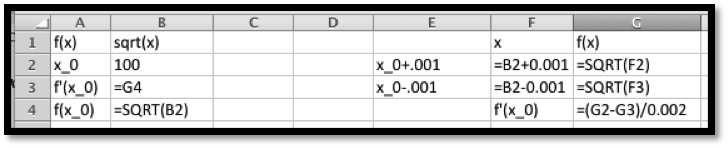
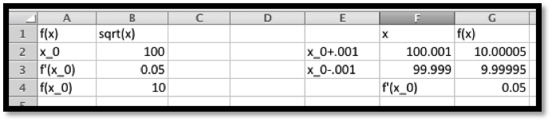
Thus, the linear approximation is
\begin{align*}
\linear f(x) \amp = f(100)+f'(100)(x-100)\\
\amp =10+(0.05)(x-100)\text{.}
\end{align*}
We can set up the worksheet to compute the approximation and to give us the error, both as a number and as a percentage of the correct answer.
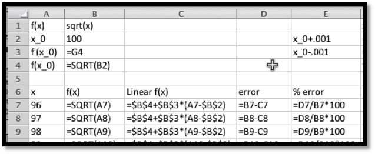
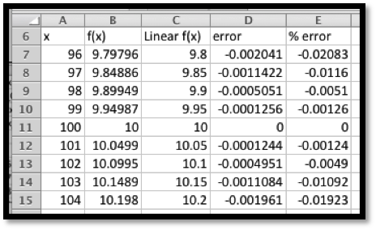
It is then straightforward to compute values and check accuracy. On the given domain, the linear approximation has an error under 0.03%.
Example 3.3.4. Estimating reciprocals.
Use information about \(f(x)=100/x\) near \(x_0=400\) to estimate the reciprocals of the integers from of 396 through 404. Check the accuracy of your approximations.
Solution.
Once again, we use Excel to find the value of the function and its derivative at 400. For the derivative we use the calculator approximation.
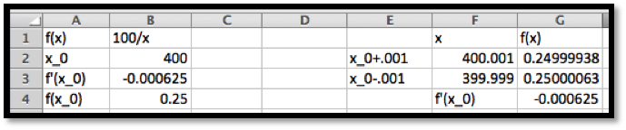
Thus the linear approximation is
\begin{align*}
\linear f(x) \amp = f(400)+f'(400)(x-400)\\
\amp =.25+(-0.000625)(x-400)\text{.}
\end{align*}
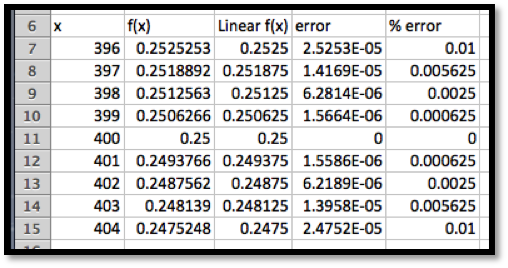
It is then straightforward to compute values and check accuracy. On the given domain, the linear approximation has an error under 0.01%.
Example 3.3.6. Estimating exponential functions.
For approximating interest with continual compounding it is useful to have a linear approximation of \(f(r)=exp(r)\) when \(r\) is close to 0. Use information about \(f(r)=exp(r)\) near \(r_0=0\) to estimate the exponential function for numbers near 0. Check the accuracy of your approximations and give a domain where the approximation is good enough to use.
Solution.
Once again, we use Excel to find the value of the function and its derivative at 0. For the derivative we use the calculator approximation.
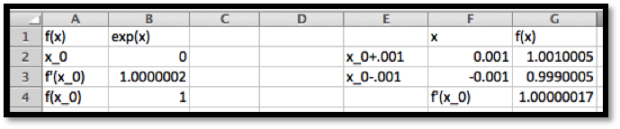
Thus the linear approximation is
\begin{align*}
\linear f(x) \amp = f(0)+f'(0)(r-0)\\
\amp = 1+(1)(r)\text{.}
\end{align*}
This is much easier to compute than the exponential function. However, when we check accuracy, we find that it is not very accurate for other integer values.
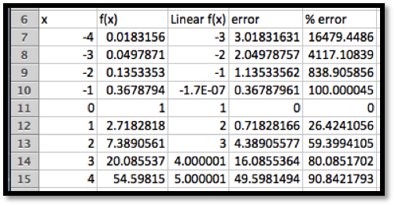
That brings us back to the last part of the question, which asks for a domain where the approximation is good enough to use. The phrase “good enough to use” will depend on the setting, but we will be happy with an estimate that is within 1%. Since we are going to use this for interest rates, we are interested in positive rates.
We modify the worksheet to allow a step size, \(\Delta x\text{,}\) to be used. Then we experiment with step sized till we get a domain where the error is under 1%.
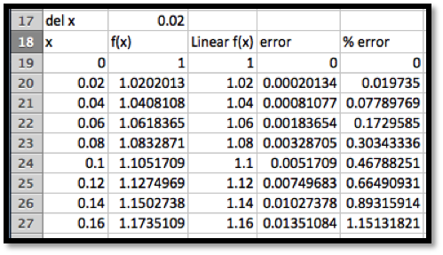
We see that \(\exp(r)\approx 1+r\) for \(0\le r\lt 0.15\text{.}\) This gives us an approximation we can use for rates of up to 15%.
The last example illustrates that linear approximations should only be used for a limited domain. The size of the domain where the linear approximation is “good enough” will depend on the definition of “good enough” or the acceptable error in our approximation. The good domain will also depend on how far the graph is from linear, or how fast it is bending.
Reading Questions Reading Check
1. Reading check, Local Linearitys.
This question checks your reading comprehension of the material is section 3.3, Local Linearity, of Business Calculus with Excel. Based on your reading, select all statements that are correct. There may be more than one correct answer. The statements may appear in what seems to be a random order.
- In the differentiable case, the the linear approximation is the tangent line.
- In the discrete case, the linear approximation is a secant line.
- For a function \(f(x)\text{,}\) the discrete linear approximation of \(f(x)\) at \(a\) is \(f(a)+mf(a+1)*(x-a)\) where \(mf(a+1)\) is the marginal change of \(f(x(\) form \(a\) to \(a+1\text{.}\)
- In the discrete case we look at the the linear approximation is the tangent line.
- Linear approximations can always be used for values within 5 of the base point.
- For a function \(f(x)\text{,}\) the linear approximation of \(f(x)\) at \(a\) is \(f(a)+f'(a)*(x-a)\) where \(f'(a)\) is the derivative of \(f(x(\) at \(a\) .
- One of the reasons for looking at the linear approximation of a function is that linear functions are easy to evaluate.
- None of the above
Exercises Exercises: Local Linearity
Exercise Group.
For Exercise 3.3.1–3.3.5, for the given function and value for \(x_0\text{:}\)
- Give the formula for the discrete linear approximation.
- Evaluate the approximation at \(x_1\text{.}\)
1.
\(x_0=10\text{,}\) \(f(10)=50\text{,}\) \(mf(11)=6\text{,}\) and \(x_1=15\text{.}\)
Solution.
\begin{align*}
f(x) \amp \approx f(10)+mf(11)*(x-10)\\
f(x) \amp \approx 50+6*(x-10)\text{.}
\end{align*}
Next we evaluate the linear approximation at 15:
\begin{equation*}
f(15)\approx 50+6*(15-10)=50+30=80\text{.}
\end{equation*}
2.
\(x_0=15\text{,}\) \(\profit(15)=50\text{,}\) \(\Mprofit(16)=2\text{,}\) and \(x_1=6\text{.}\)
3.
\(x_0=20\text{,}\) \(f(19)=191\text{,}\) \(f(20)=200\text{,}\) \(f(21)=210\text{,}\) and \(x_1=28\text{.}\)
Solution.
\begin{equation*}
f(x)\approx f(20)+mf(21)*(x-20)\text{.}
\end{equation*}
Note that we have to compute \(mf(21)\text{.}\)
\begin{align*}
mf(21)\amp =f(21)-f(20)= 210-200=10\\
f(x) \amp \approx 200+10*(x-20)\text{.}
\end{align*}
Next we evaluate the linear approximation at 28:
\begin{equation*}
f(28)\approx 200+10*(28-20)=200+80=280\text{.}
\end{equation*}
4.
\(x_0=50\text{,}\) \(\revenue(49)=1007\text{,}\) \(\revenue(50)=1000\text{,}\) \(\revenue(51)=994\text{,}\) and \(x_1=45\text{.}\)
5.
\(x_0=100\text{,}\) \(cost(99)=3740\text{,}\) \(cost(100)=3743\text{,}\) \(cost(101)=3754\text{,}\) and \(x_1=112\text{.}\)
Solution.
\begin{equation*}
\cost(x)\approx \cost(100)+\Mcost(101)*(x-100)\text{.}
\end{equation*}
Note that we have to compute \(\Mcost(101)\)
\begin{gather*}
\Mcost(101)=\cost(101)-\cost(100)=3754-3743=11\\
cost(x)\approx3743+11*(x-100)\text{.}
\end{gather*}
Next we evaluate the linear approximation at 112:
\begin{equation*}
\cost(112)\approx 3743+11*(112-100)=3743+132=3875\text{.}
\end{equation*}
Exercise Group.
For Exercise 3.3.6–3.3.10, for the given function and value for \(x_0\text{:}\)
- Calculate the numeric approximation of the derivative at \(x_0\text{.}\)
- Give the formula for the linear approximation at that point.
- Evaluate the approximation at \(x_1\text{.}\)
- Evaluate the function at \(x_1\) and compute the accuracy of the approximation.
6.
\(f(x)=\ln(x)\text{,}\) \(x_0=100\text{,}\) and \(x_1=105\text{.}\)
7.
\(g(x)=\sqrt{x}\text{,}\) \(x_0=81\) and \(x_1=85\text{.}\)
Solution.
-
\begin{equation*} g(x)\approx g(81)+g'(81)*(x-81)\text{.} \end{equation*}Note that \(g(81)=\sqrt{81}=9\) and\begin{equation*} g'(81)\approx \frac{g(81+.001)-g(81-.001)}{0.002}= \frac{\sqrt{81.001}-\sqrt{80.999}}{0.002}=.056\text{.} \end{equation*}
- \begin{equation*} g(x)\approx 9+0.056*(x-81)\text{.} \end{equation*}
- Hence at \(x_1=85\) we get\begin{equation*} g(85)/approx 9+0.056*(85-81)=9+0.056*4=9+0.23=9.23\text{.} \end{equation*}
-
If we compute \(\sqrt{85}=9.22\text{,}\) we see that the approximation is fairly good.The error is \(\abs{\text{real value}-\text{approximation}}=\abs{9.22-9.23}=\abs{-0.01}= 0.01\text{.}\)
8.
\(\profit(x)=-x^2/10+3000x-7862\text{,}\) \(x_0=2000\) and \(x_1=2050\text{.}\)
9.
\(\revenue(x)=x*\ln(x)\text{,}\) \(x_0=3000\) and \(x_1=3100\text{.}\)
Solution.
-
\begin{equation*} \revenue(x)\approx \revenue(3000)+\revenue'(3000)*(x-3000)\text{.} \end{equation*}Note that \(\revenue(3000)\approx 24019\) and\begin{equation*} \revenue'(3000)\approx \frac{\revenue(3000.001)-\revenue(2999.999)}{0.002}= 9.00636\text{.} \end{equation*}
- \begin{equation*} \revenue(x)\approx 24019+9.00636*(x-3000)\text{.} \end{equation*}
- Hence at \(x_1=3100\) we get\begin{equation*} \revenue(3100)/approx 24019+9.00636*(3100-3000)=24919.7\text{.} \end{equation*}
-
If we compute \(\revenue(3100)=24921.4\text{,}\) we see that the approximation is fairly good.The error is \(\abs{\text{real value}-\text{approximation}}=\abs{1.66485}= 1.66485\text{.}\)
10.
\(cost(x)=(x*\ln(x))/2+x^2/300\text{,}\) \(x_0=3000\) and \(x_1=3100\text{.}\)
11.
Let \(f(x)=(1+x)^r\) and \(x_0=0\text{.}\)
- Find the linear approximation of \(f(x)\) at \(x_0\) for \(r=1/3,1/2,-1\) and \(2\text{.}\)
- Give a rule for the linear approximation for a general value of r.
- How accurate is the linear approximation for square and cube roots of 1.1, obtained at \(x_1=0.1\text{?}\)
Solution.
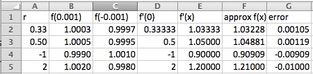
- The linear approximation of \(f(x)\) at \(x=0\) is \(f(0)+f'(0)(x)\text{.}\) For all values of \(r\) we have \(f(0)=1\text{.}\) As the table shows when \(r=1/3,1/2,-1\) and 2, we have \(f(x)\approx 1+r x\)
- \begin{equation*} f(x) \approx 1+r*x \end{equation*}
- As the table shows, the error for using these approximations for the square root and cube root of 1.1 is approximately 0.001.